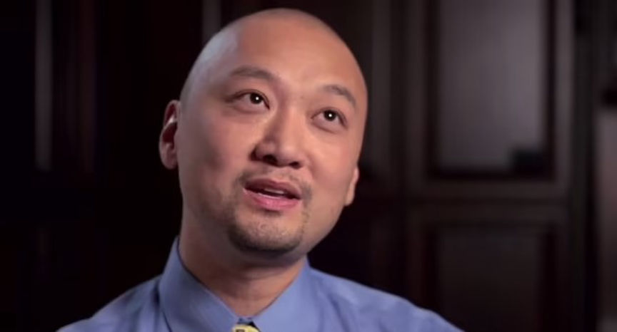
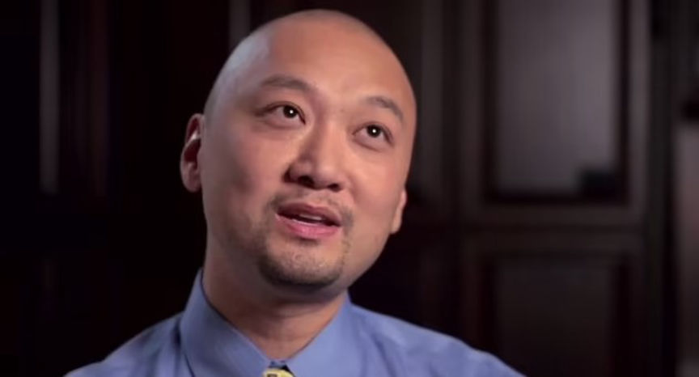

Doctor Attempted to Hire a Hitman
~2 min read | Published on 2023-10-19, tagged Murder-for-Hire, Pleaded-Guilty using 372 words.
A medical doctor pleaded guilty to attempting to hire a hitman on the dark web to kill his girlfriend.

Dr. James Wan, 54, of Georgia, admitted he deposited more than $16,000 into the escrow of an undisclosed dark web murder-for-hire site and placed an order to have his girlfriend murdered.
The FBI learned of Wan's plot from an undisclosed media organization that researches dark web murder-for-hire sites.
The FBI established that Wan created an account on the site on April 18, 2022, and placed the order. In the order details, Wan included his girlfriend's name, address, and Facebook account. He also gave out the description of the victim's car and its license plate. He also left instructions that indicated that he wanted the murder to look like a robbery gone wrong.
After placing the order, Wan sent approximately $8,000 in Bitcoin to the site as a downpayment for the order. He later contacted the site's admin seeking clarification on why the Bitcoin deposit had not been credited to his account on the site. The admin confirmed that Wan had sent the Bitcoin to the wrong address. In response, Wan said, "Damn. I guess I lost $8k. I’m sending $8k to escrow now."
Wan made a new deposit of $8,000 and the admin confirmed that he had deposited to the correct address. When asked whether he would like the hit on his girlfriend to look like an "accident or normal shooting," Wan said, "Accident is better."
On April 29, Wan deposited another $8,000 into the site's escrow to complete the payment for the hit. On May 10, he deposited an additional $1,200 to the site's escrow to cover the difference occasioned by Bitcoin's price drop.
The FBI contacted the victim after learning of the plot against her and placed her under their protection.
On being questioned, Wan admitted that he had placed the order and checked on its status daily. The agents acquired evidence from Wan's phone and Bitcoin wallet that proved he had orchestrated the murder-for-hire plot.
Wan pleaded guilty to one count of using a facility of interstate commerce in the commission of murder-for-hire on October 17, 2023. His sentencing hearing is scheduled for January 18, 2024. He faces a maximum sentence of 10 years in prison.

James Wan
Dr. James Wan, 54, of Georgia, admitted he deposited more than $16,000 into the escrow of an undisclosed dark web murder-for-hire site and placed an order to have his girlfriend murdered.
The FBI learned of Wan's plot from an undisclosed media organization that researches dark web murder-for-hire sites.
The FBI established that Wan created an account on the site on April 18, 2022, and placed the order. In the order details, Wan included his girlfriend's name, address, and Facebook account. He also gave out the description of the victim's car and its license plate. He also left instructions that indicated that he wanted the murder to look like a robbery gone wrong.
After placing the order, Wan sent approximately $8,000 in Bitcoin to the site as a downpayment for the order. He later contacted the site's admin seeking clarification on why the Bitcoin deposit had not been credited to his account on the site. The admin confirmed that Wan had sent the Bitcoin to the wrong address. In response, Wan said, "Damn. I guess I lost $8k. I’m sending $8k to escrow now."
Wan made a new deposit of $8,000 and the admin confirmed that he had deposited to the correct address. When asked whether he would like the hit on his girlfriend to look like an "accident or normal shooting," Wan said, "Accident is better."
On April 29, Wan deposited another $8,000 into the site's escrow to complete the payment for the hit. On May 10, he deposited an additional $1,200 to the site's escrow to cover the difference occasioned by Bitcoin's price drop.
The FBI contacted the victim after learning of the plot against her and placed her under their protection.
On being questioned, Wan admitted that he had placed the order and checked on its status daily. The agents acquired evidence from Wan's phone and Bitcoin wallet that proved he had orchestrated the murder-for-hire plot.
Wan pleaded guilty to one count of using a facility of interstate commerce in the commission of murder-for-hire on October 17, 2023. His sentencing hearing is scheduled for January 18, 2024. He faces a maximum sentence of 10 years in prison.